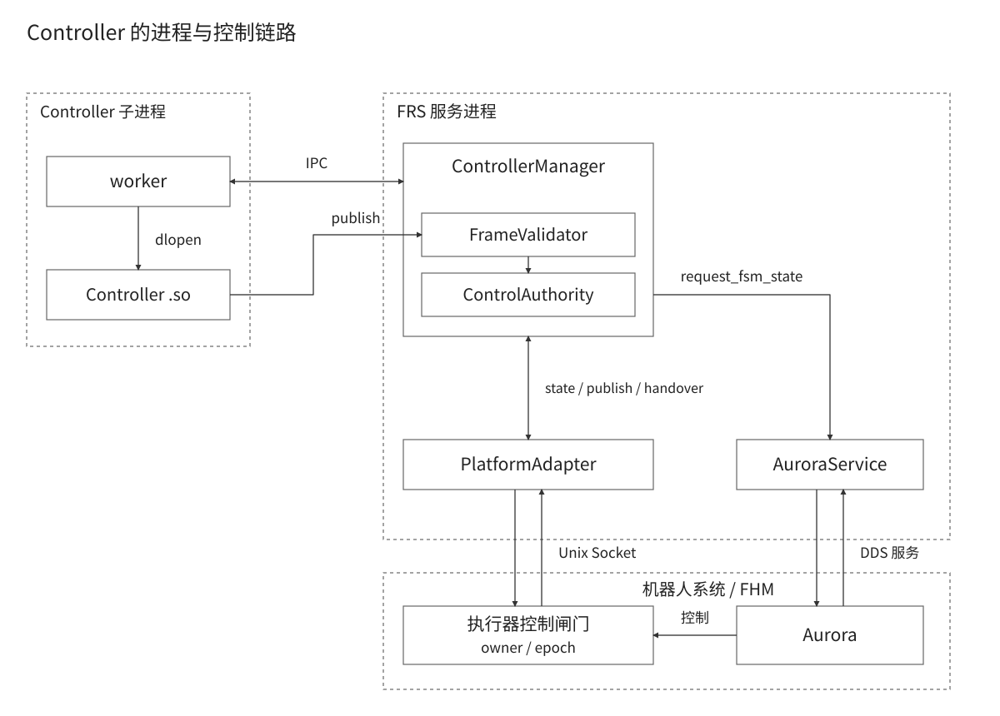
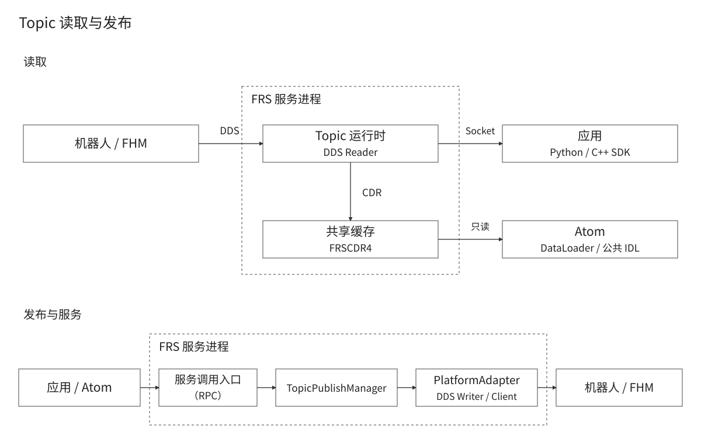

二次开发框架与通信中间件
让开发者聚焦业务能力，贯通应用开发、运动二开与实机/仿真联调。
本人职责主导框架设计与开发，推动能力接入与项目交付
落地成果
- 非业务代码量
- 降低 90%
- 单模块适配投入
- 3 人天 → 0.5 人天
- 内存使用效率
- 提升 20%–30%
支撑 GR3/GRW 等项目量产交付，形成覆盖业务能力复用、自研算法接入和跨环境联调的统一开发体系。
项目介绍
面向机器人应用开发、算法接入和多机型交付，建设统一的二次开发框架，连接机器人数据、业务能力与运动控制，为开发者提供一致的开发、运行和联调体验。
将通信接入、运行管理和异常处理沉淀为公共能力。开发者既可直接调用机器人现有能力，也可将业务封装为可复用模块，或接入自主开发的运动控制算法，组合构建完整机器人应用。
个人贡献
- 降低二次开发门槛：主导框架设计与开发，统一机器人数据、业务能力及运动控制接口，将通信接入、运行管理和异常处理从业务逻辑中抽离，非业务代码量降低 90%。
- 提高模块复用与交付效率：建设可独立开发、部署和组合调用的原子能力体系，统一模块启动、任务执行、状态查询与退出管理，支撑 GR3/GRW 等项目量产交付，单模块适配投入由 3 人天降至 0.5 人天。
- 支持自研运动算法接入：建设控制器接入与管理机制，支持用户自主开发运动控制算法，统一控制器运行、切换和停止流程，完成自研控制器与内置运控之间的控制权交接。
- 完善任务执行与问题追溯：贯通任务发起、受理、进度报告及结果查询，支持执行记录留存和异常追踪，提高多模块协作与复杂任务联调效率。
- 减少重复数据接入成本：建设共享数据访问与有界缓存机制，支持多个模块复用订阅及缓存资源，并按使用需求建立和回收，内存使用效率提升 20%–30%。
- 提高跨环境研发效率：统一实机与仿真的开发接口，支持业务模块和控制算法在不同环境中接入、验证与联调，减少重复适配及研发过程对实机的依赖。
核心能力
统一开发体验
将数据读取、设备操作和业务能力调用整合为一致的开发入口，减少重复学习与接入工作。
业务能力复用
支持模块独立开发、部署和组合调用，统一运行状态与任务结果管理，提升跨团队协作和项目交付效率。
运动算法二开
支持自研控制器接入，统一管理运行、切换、停止与控制权交接，降低算法集成和替换成本。
任务执行追踪
关联任务受理、执行进度和最终结果，支持记录查询与异常追溯，改善复杂业务的联调体验。
共享数据访问
复用订阅与缓存资源，减少多个模块重复接入同类数据的开销，提高资源利用率。
实机与仿真联调
复用统一接口、业务模块与控制算法，支持从仿真验证到实机联调的研发流程。
作品展示
 01
01整体架构与能力集成
统一开发入口连接业务模块、自研控制器和机器人能力，支撑模块独立接入、组合调用与跨环境复用。
查看原图 ↗
02自研控制器与运动二开
支持自主运动算法接入，统一管理控制器运行、切换与停止，完成自研控制器和内置运控之间的控制权交接。
查看原图 ↗
03共享数据与多模块协作
统一数据访问、能力调用与消息发布，减少多个业务模块重复接入同类数据的工作，提高资源利用率与协作效率。
查看原图 ↗← 返回工作经历